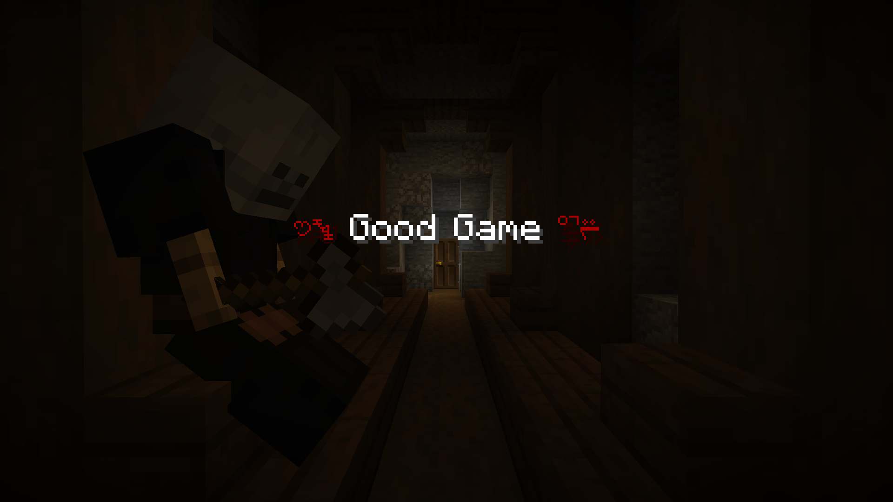

О карте
Краткое описание карты и ее истории
Бывший детектив, известный своей осторожностью и наблюдательностью, покинул город после одного шокирующего происшествия. Он решил уйти в лес, чтобы отойти от суеты и забыть о прошлом. Он нашёл себе маленькое жилище в глубине леса, где жил один и занимался своими хобби. Однажды, в один прекрасный день, он обнаружил заброшенный лагерь в лесу, наполненный странными символами и загадочными рисунками. Это открытие навсегда изменило его жизнь. Он заметил, что в лагере есть следы недавнего присутствия людей, и решил начать собирать улики и информацию. Напуганный и заинтригованный, бывший детектив решил раскрыть тайну лагеря. Он начал собирать улики и информацию, встречая новых персонажей и раскрывая новые загадки. Он встретил старого друга, который был связан с лагерем, и узнал о таинственных исследованиях, которые проводились в лесу. Его друг рассказал, что в лагере работали учёные, которые пытались создать новое существо, которое могло бы помогать людям в лесу. Но что именно они пытались сделать, и что пошло не так, осталось загадкой. Бывший детектив должен использовать свои навыки и знания, чтобы раскрыть тайну и защитить лес и его обитателей.Карта представляет собой детективную приключенческую историю, полную таинственных символов, загадочных рисунков и опасностей, где бывший детектив должен использовать свои навыки и знания, чтобы раскрыть правду и спасти лес.

Скачать
Скачать карту в формате .zipᅠ ᅠ Инструкции по установке и настройке:
1. Скачайте файл map.zipᅠ
2. Разархивируйте файл и достаньте папку с картой
3. Положите папку с картой в .minecraft\saves
Детали


Карта огонь просто пушка
Сделано качественно. Очень хорошая анимация. Короче топ